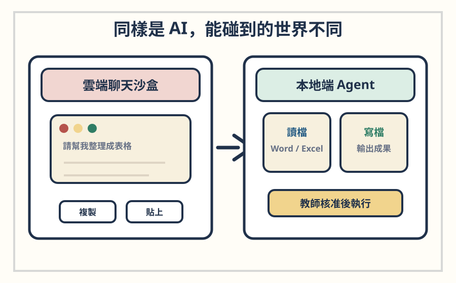
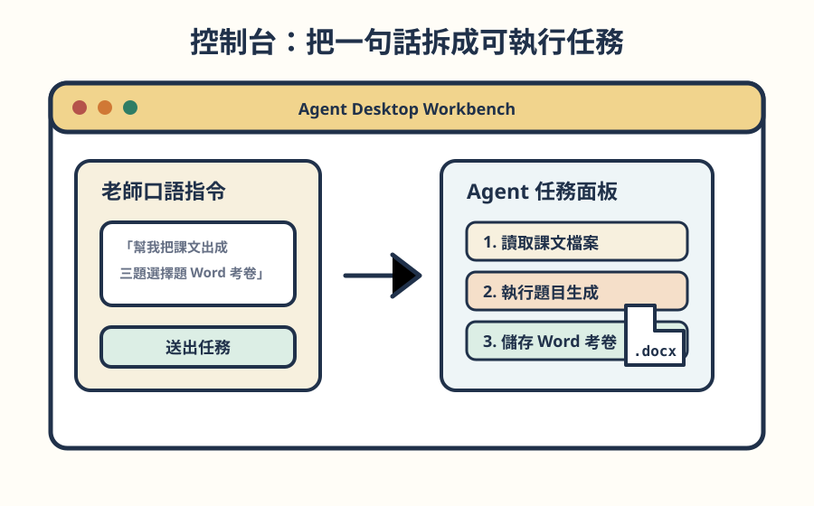
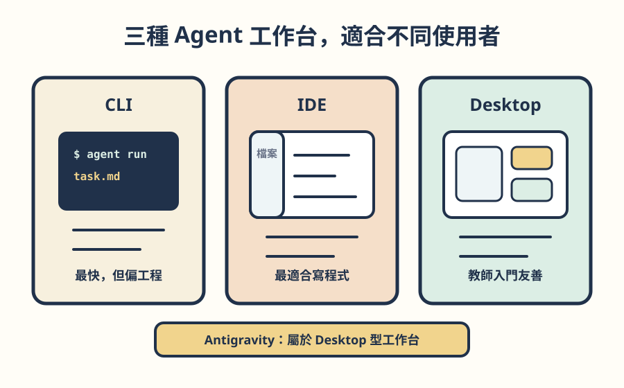

AI Agent Antigravity 研習圖卡
第一章概念入門｜教學簡報型網頁圖卡
第一單元
第一單元：AI Agent 運作原理
從「會回答問題」到「會動手完成任務」。
問題引入
ChatGPT 已經很好用，為什麼還要學 AI Agent？
因為老師真正需要的，不只是答案，而是能完成工作流程的助手。
聊天視窗
回答
給你文字、建議與步驟。
Agent 工作台
完成
幫你讀檔、處理、產出成果。
一句話分清楚
Chatbot 給你食譜，Agent 幫你端菜
Chatbot 偏向「說明」；AI Agent 偏向「執行」。
傳統聊天機器人
像提供食譜的諮詢廚師
你問一句，它回一句；剩下的複製、整理、存檔，還是老師自己做。
AI Agent
像包辦買菜到擺盤的智能主廚
你給目標，它會規劃步驟、呼叫工具、產出實體成果。
核心差異一
從「被動回答」到「主動執行」
Chatbot 等你一步步問；Agent 會根據目標自己拆解任務。
核心差異二
雲端沙盒 vs 本地端 Agent
網頁聊天適合產生文字；本地端 Agent 才能安全地碰到真實檔案與電腦環境。

人機協同：教師核准後，Agent 才讀寫本機檔案並產出成果。
核心差異三
出錯時，Agent 會回頭修正
程式報錯、套件缺少、格式不符時，它能觀察錯誤並重新嘗試。
Self-Correction：不是一次成功，而是會回來修正。
心智模型
AI Agent = 大腦 + 四肢 + 控制台
LLM 是大腦，Tools 是四肢，Agent 介面是讓它行動的控制台。
LLM
Tools
Agent App
控制台轉移
控制台讓口語指令變成真實動作
老師一句話，會被 Agent 轉成讀檔、執行 Python、產生 Word 與保存檔案。

Tools 的定位
工具呼叫，讓 AI 從「想」變成「做」
讀檔、寫檔、執行 Python、連接 Google 服務，都是 Agent 的工具能力。
ReAct 循環
Agent 的核心節奏：思考、行動、觀察、修正
它不是一次回答完，而是不斷檢查結果，直到任務完成。
結果不對就回到 Thought，重新調整下一步。
教師情境
一句指令，拆成一串工作流程
例如：「幫我把課文出成三題選擇題 Word 考卷。」
工具型態
CLI、IDE、Desktop：三種 Agent 工作台
CLI 最快、IDE 最適合寫程式，Desktop 則最適合教師用口語與按鈕完成任務。

控制台整合度
Antigravity 像原廠特斯拉
控制螢幕、按鈕、安全防線都配好；老師不必自己組裝模型、金鑰與工具插件。
- 原廠特斯拉：高度整合、開箱即用。
- 自由拼裝車：彈性最高，但需要自組配備。
- 研習選 Antigravity，是因為它最適合教師入門。